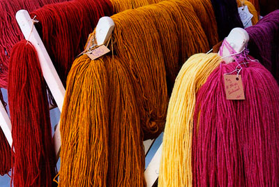

|
|
Tidal Yarns Events
Check back for more updates!
May 14 & 15, 2011
New Hampshire Sheep & Wool Festival
Hopkinton State Fairgrounds
Contoocook, NH
www.nhswga.com
May 21, 2011
Coggeshall Farm Museum
5th Annual Wool and Fiber Festival
Bristol, RI
www.coggeshallfarm.org
May 28 & 29, 2011
Massachusetts Sheep and Woolcraft Fair
Cummington Fairgrounds
Cummington, MA
www.masheepwool.org
October 1 & 2, 2011
Vermont Sheep and Wool Festival
Tunbridge Fairgrounds
Tunbridge, VT
www.vermontsheep.org
November 5 & 6, 2011
Fiber Festival of New England
Eastern States Exposition
West Springfield, MA
www.fiberfestival.org
Tidal Yarns can be found at:
Mystic River Yarns, Mystic, CT
www.mysticriveryarns.com
Saybrook Yarns, Saybrook, CT
www.saybrookyarns.com
Sit 'n Knit, Bloomfield, CT
www.sit-n-knit.com
Goshyarnit, Kingston, PA
www.goshyarnitshop.com

|